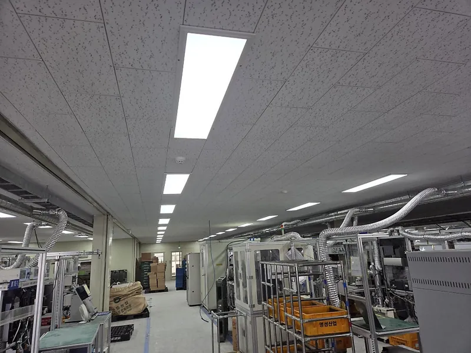
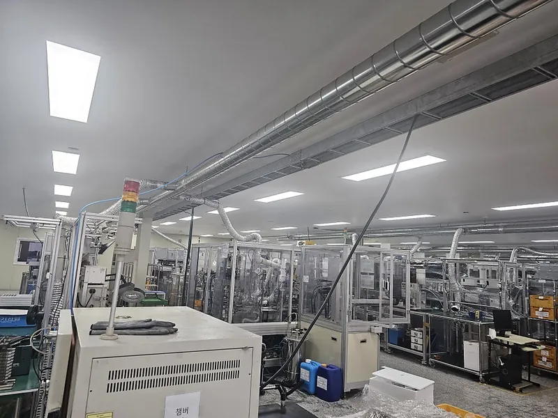
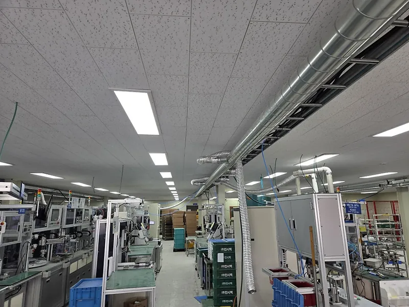
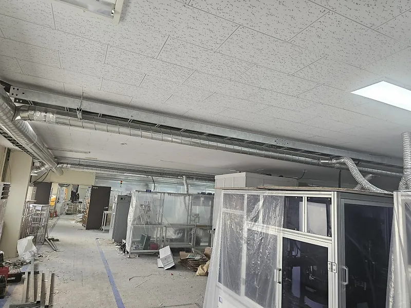
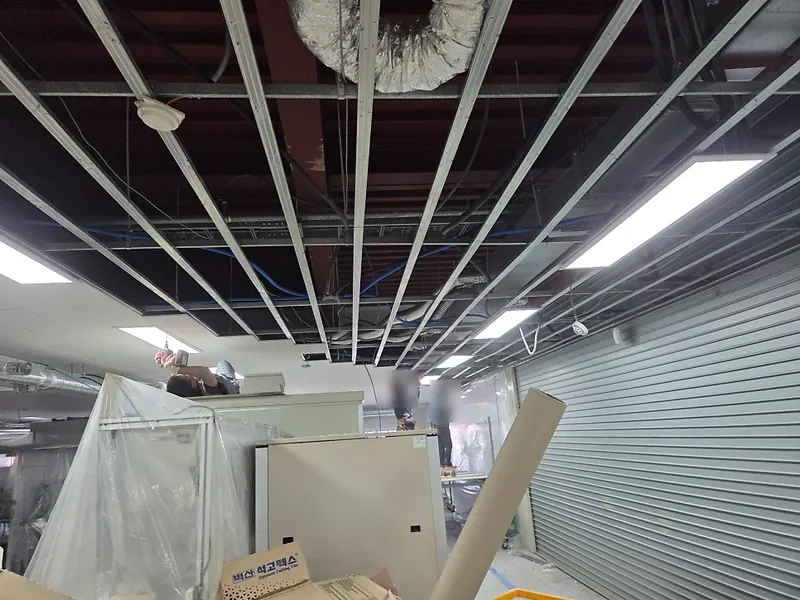
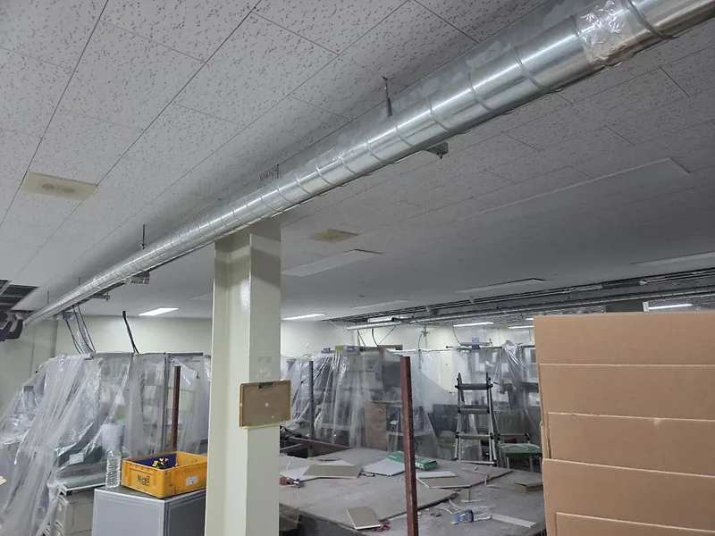

평택 공장 천정공사
기계와 설비가 가득한 공장의 도배 천정을 텍스로 바꾼 공사입니다. 설비를 비닐로 덮어 보호하고, 작업 공간이 좁아 부분 철거를 하며 진행했습니다. 천정을 뜯어 드러난 구조와 배선은 정리하거나 보강했고, 레이저로 수평을 맞춰 새 텍스를 붙였습니다.

공사 전과 후
도배로 마감돼 있던 공장 천정을, 설비를 덮어 보호하며 텍스로 바꿨습니다. 가운데 손잡이를 옆으로 밀어 보세요.


현장 사진 7장
공사 순서대로 올렸습니다. 사진을 누르면 크게 볼 수 있습니다.
- 공사 전 도배로 마감된 공장 천정

설비를 비닐로 덮고 진행한 작업
천정을 뜯어 드러난 골조와 배선- 텍스로 바꾼 생산 라인 천정
- 텍스와 조명을 정리한 작업장
 설비 사이까지 마감한 천정
설비 사이까지 마감한 천정
덕트 주변까지 마감한 천정


견적은 현장을 보고 정확하게 드립니다
공사 종류와 현장 위치, 방문을 원하는 날짜를 남겨 주시면 확인 후 연락드립니다.